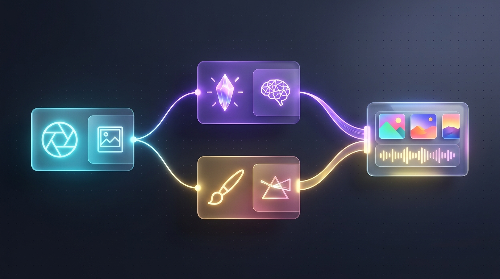
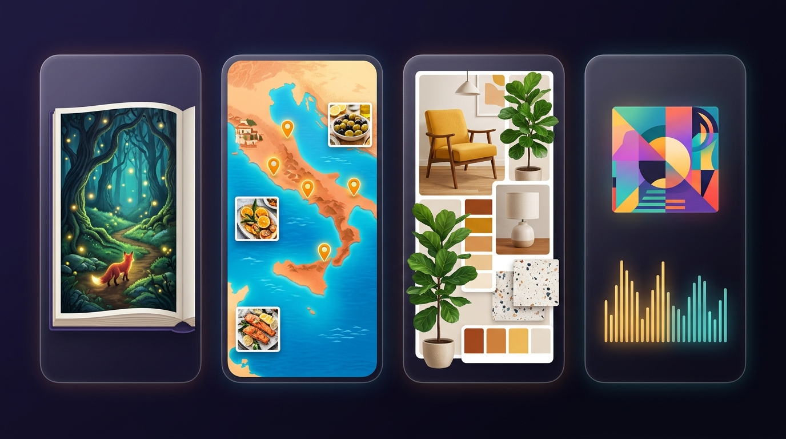

The complete visual handbook to Google Opal's node-graph AI mini-app architecture—plus exact instructions for recovering your My Drive > Opal prompts and migrating workflows to Gemini Skills and Google AI Studio after Opal's November 17, 2026 graduation.
Standard chat prompts crumble when a task needs five distinct stages—like researching a live URL, writing a script, painting four matching scenes, and formatting a clean webpage. Launched by Google Labs in July 2025, Google Opal (opal.google) pioneered visual no-code AI mini-apps before officially graduating and shutting down on November 17, 2026.
@Variablesp. 6opal.google and Gems made by Labs; shared links now redirect to developer guidance and interactive graphs no longer execute. Your original project files stay safe inside My Drive > Opal, and Opal's workflow DNA lives on in Gemini Skills (/skill-name) and Google AI Studio.
Following Opal's November 17, 2026 graduation, active workflows no longer execute at opal.google—but Google preserved all user files inside Drive so you can recover prompts in minutes.
Open Google Drive and navigate to My Drive > Opal. All saved projects (including Gems made by Labs) remain intact and untouched.
Download any project file and open it in Notepad, TextEdit, or VS Code. Although wrapped in code-like structure, your original prompts appear as plain text.
Paste modular instructions into a new Gemini Skill (triggered via /skill-name), or rebuild multi-step apps in Google AI Studio.
| Google Tool | Core Format | Status (Nov 2026) | Best Use Case |
|---|---|---|---|
| Google Opal | Visual Node Graph + Form Mini-App | Graduated / Retired (Nov 17, 2026) |
Historical reference blueprint; original files stored in My Drive > Opal for plain-text prompt extraction. |
| Gemini Skills & Gems | Reusable /skill-name Instructions |
Active (Zero Code) | Official successor for Opal's reusable prompt workflows—invoke directly in Gemini chat with /skill-name. |
| Google AI Studio | Prompt Lab & Build Vibe-Coding | Active (Web / API) | Recommended destination for prototyping complex chains, testing JSON schemas, and shipping Cloud Run apps. |
| Google Antigravity | Agentic Full-Stack IDE | Active (Agentic Code) | Turning recovered multi-step Opal DAGs into full-stack Next.js/Python production SaaS apps with DBs & auth. |
/name). Port multi-node pipelines mixing Search, Imagen, Veo, and custom UIs to Google AI Studio Build or Antigravity!
When reading exported project files from My Drive > Opal, knowing how Opal's canvas worked makes every saved node clear: Opal kept its chat builder and visual cards in bi-directional sync.
@ Prompt Editor: Click any node to pick its AI model/tool and type @ to inject dynamic outputs from earlier steps.Every Opal mini-app—from a two-step summarizer to a ten-node multimedia studio—is assembled from four foundational node families working together in sequence or in parallel.

| Node Category | Available Engines / Options | What It Does & Best Practical Tip |
|---|---|---|
| 1. User Input | Text box, Dropdown, Photo/Image upload, PDF/Doc/Audio file, URL | Builds the front-door form your users fill out. Add clear placeholder hints so users know exactly what to type or upload. |
| 2. Generate (Text & Logic) | Gemini Flash (fast) • Gemini Pro (deep reasoning & coding) | Plans, summarizes, writes scripts, formats structured tables, or writes custom interactive HTML layouts. Use Flash for speed, Pro for nuance. |
| 3. Generate (Visual & Video) | Imagen 4 • Nano Banana (image edit) • Veo (video clips) | Creates crisp illustrations, restyles uploaded user photos in context, or renders short cinematic MP4 motion clips inside your workflow. |
| 4. Generate (Voice & Music) | AudioLM / Speech TTS • Lyria (instrumental music) | Turns upstream story text into natural spoken narration or composes custom background soundtracks structured by genre and mood. |
| 5. Tools & Assets | Google Search • URL / YouTube Reader • Add Asset | Grounds steps in live web facts, extracts webpage/video content, or attaches permanent brand PDFs/style guides from Google Drive. |
| 6. Output | Dynamic Webpage • Google Docs / Sheets / Slides | Presents your finished text, galleries, and players in a styled UI—or exports structured reports straight into the user's Workspace. |
@Variable Chips
The magic of Opal happens when Step 2 automatically builds on Step 1's output—for example, letting Gemini write an ultra-detailed visual art prompt first, then feeding that exact prompt into Imagen 4 via an @ tag.
@ Dynamic References Work Inside Any Node
Inside any Generate or Output prompt box, press the @ key on your keyboard. Opal opens a live menu listing every upstream User Input, Asset, Tool, and completed Step—inserting a colored dynamic chip that updates automatically on every run.
Act as a senior editorial art director.
Read the product positioning in @Brand Summary and inspect the uploaded @Product Photo.
Use @Google Search to verify seasonal color trends for this category.
Write one vivid, photographic scene description placing the product in a sunlit lifestyle setting with natural props and 85mm depth of field.
Output ONLY the raw image-generation prompt (under 65 words), with zero intro commentary or bullet points.
Never cram research, copywriting, and formatting into one giant prompt. Split them into three focused nodes so each step succeeds reliably and is effortless to debug.
When Node A feeds Node B (like Gemini feeding Imagen or Lyria), end Node A with "Output ONLY the prompt text—no conversational filler" so clean text flows forward.
Rename generic labels like Generate 3 to clear titles like Competitor Table or Cover Art so your @ menu stays self-explanatory as graphs grow.
@User Input to expand their 3 words into a rich, structured brief—then feed that upgraded brief into Imagen, Veo, and Lyria so every output looks studio-crafted!
When Opal ran live, end-users never saw the node graph—they saw a clean interactive web mini-app. Use these four UX lessons from Opal when rebuilding recovered prompts inside Google AI Studio Build or Gemini Skills.

Apps with 8 required boxes scare users off. Ask for 1–3 high-leverage inputs (e.g., Topic, Tone Dropdown, and optional Reference Image) and let Gemini infer the rest.
In AI Studio Build or React, carry over Opal's clear layout contracts—such as "two-column magazine hero card, summary callout pills, and a downloadable checklist table."
Preserve your saved Opal theme cues (like "warm editorial cream with forest-green serif headers") inside a DESIGN.md or System Instruction when migrating.
Route only polished final outputs to the user view so intermediate JSON drafts, raw search snippets, and prompt-upgrader notes stay behind the scenes.
My Drive > Opal for the original @User Input fields, system tone rules, and Output layout description. Keeping those three sections intact when pasting into AI Studio Build recreates your mini-app's exact feel in minutes.
Nothing kills mini-app magic faster than a 45-second loading spinner or one broken step derailing the final screen. Use Opal's Step Console and Parallel Fan-Out wiring to keep apps fast and resilient.
When your final webpage looks wrong, open the Console panel and click each step from left to right. You will spot the exact node where a hallucination or empty string started.
Tweaking your final layout prompt? Run just that downstream node in the Step Inspector using cached upstream values instead of re-generating every image and video from scratch.
Test your app with a 1-word input, a broken URL, and an unrelated selfie. Add a fallback line in Step 1: "If @User Input lacks detail, assume sensible creative defaults."
Use Gemini Flash for quick input cleanup, routing, and formatting; save heavier Gemini Pro reasoning solely for your core analytical or creative centerpiece node.
Whether recovering old workflows from My Drive > Opal or rebuilding these architectures in Google AI Studio / Gemini Skills, each pattern below maps directly to async prompts and tools.
| Mini-App Recipe | User Input Fields | Chained Node Graph (Middle Steps) | Styled Output View |
|---|---|---|---|
| 1. URL-to-Social Launch Kit | @Product URL + @Brand Tone dropdown |
Step 1 (URL Reader + Gemini): Extract key value props. Step 2A (Gemini): LinkedIn, X & IG posts. Step 2B (Imagen 4): 1:1 & 16:9 hero visuals. |
Tabbed campaign webpage with copy-paste post cards and downloadable visuals. |
| 2. Illustrated Storybook + Voiceover | @Child Name, @Hero Animal, @Lesson |
Step 1 (Gemini Pro): 4-page rhyming story + character visual sheet. Steps 2A–2D (Imagen 4): 4 watercolor spreads. Step 2E (AudioLM): Warm narrated audio. |
Interactive picture-book webpage with embedded audio player at the top. |
| 3. Live Competitor & Topic Brief | @Company / Topic + @Focus Question |
Step 1 (Google Search + Gemini): Pull recent news, pricing & launches. Step 2 (Gemini Pro): SWOT matrix + strategic takeaways. |
Executive dashboard page + one-click export to Google Docs. |
| 4. Room Photo Restyler & Shopper | @Room Photo upload + @Design Style |
Step 1 (Gemini Vision): Analyze room geometry & lighting. Step 2A (Nano Banana): Restyle photo preserving walls. Step 2B (Search): 5 matching decor categories. |
Before/After visual comparison card + curated shopping checklist. |
| 5. YouTube Hook & Thumbnail Lab | @Video Idea + optional @Host Selfie |
Step 1 (Gemini): 5 high-CTR titles + 20-second spoken cold open. Step 2 (Imagen 4 / Nano Banana): High-contrast 16:9 thumbnail concept. |
Creator pre-production sheet pairing each title next to the thumbnail preview. |
"Build an app that takes a Topic and Audience Level, uses Google Search for fresh 2026 facts, runs two parallel calls—Gemini writing a 5-bullet brief and Imagen 4 creating a header graphic—and displays both cleanly."
Even though opal.google interactive execution and shared links shut down on November 17, 2026, Google kept your data untouched inside Google Drive. Follow this guide to extract your prompts and recreate them cleanly.
My Drive > OpalSign in to Google Drive and open My Drive > Opal. Every Opal app and Gem made by Labs you created or remixed remains stored safely here.
Download the workflow file and open it in Notepad, TextEdit, or a code editor. Search (Cmd/Ctrl+F) for key phrases to copy your raw node prompts.
In the Gemini app, create a new Skill, paste your recovered instructions, and invoke it anytime inside chat by typing /skill-name!
| Asset / Scenario | Status After Nov 17, 2026 & Exact Action to Take |
|---|---|
| Your Own Opal Workflows | Safe inside My Drive > Opal. Download the files, extract your text prompts via TextEdit/Notepad, and paste into Gemini Skills or Google AI Studio. |
| Shared Public or Team Links | Shared opal.google URLs redirect to developer guidance and no longer run. Collaborators cannot view your private files automatically. |
| Someone Else's Shared Opal | Ask the original creator to open their personal My Drive > Opal folder, extract the raw prompt text from the file, and share it with you directly. |
| Standard Gemini Gems vs. Opals | Simple Gemini Gems transitioned automatically for personal accounts; multi-step Opals require manual extraction and porting to Skills or AI Studio. |
Because multi-step Opal workflows combining search, reasoning, and media don't translate automatically into a single Gemini Skill, rebuilding them with Google AI Studio and Google Antigravity unlocks full production scale.
flow.google, incorporating Whisk remixing) whenever rebuilding visual mini-apps in AI Studio Build mode!/storyboard) to output structured shot prompts, dialogue, and 16:9 briefs for Google Flow.Every Opal node maps 1-to-1 to an async API function in TypeScript or Python! Copy your tested node prompts, model choices, and parallel branching diagram straight into an Antigravity agent brief so it builds the exact architecture you already validated.
Watching five friends use your Opal link reveals every confusing form label and surprising upload before you write a single line of React—saving days of wasted frontend refactoring.
Keep this final page handy while recovering files from My Drive > Opal and porting workflows into Gemini Skills, Google AI Studio, or Antigravity.
| Symptom / Question | Root Cause & Exact Action to Take |
|---|---|
opal.google link redirects to a guidance page |
Expected after the November 17, 2026 graduation. Interactive Opal apps no longer run online; open My Drive > Opal in Google Drive to retrieve your saved source files. |
| Downloaded Drive file looks like raw JSON/code | Opal stores workflows as structured text files. Open the file in Notepad, TextEdit, or VS Code and search (Cmd/Ctrl+F) for familiar words to copy your clean prompts. |
| My Opal workflow didn't auto-appear in Gemini Skills | Only simple Gems transitioned automatically. Multi-step Opals chaining Search/media require copying extracted prompts into a new Gemini Skill (/skill-name). |
| Collaborator's shared Opal link stopped working | Shared links retired with the runtime. Ask the original author to grab the prompt text from their own My Drive > Opal folder and send it to you directly. |
| Where do I rebuild a multi-step Imagen + Search app? | Paste your extracted Opal node steps into Google AI Studio Build (aistudio.google.com) or Google Antigravity using google-genai Interactions API calls. |
| 2-word inputs give generic results in my migrated Skill | Missing Opal's Prompt Upgrader step. Add an initial instruction inside your Gemini Skill or AI Studio System Prompt telling Gemini to expand brief inputs first. |
| Rebuilt app runs slowly step-by-step in code | Media steps chained sequentially instead of in parallel. Run independent Gemini, Imagen, and Veo calls concurrently with asyncio.gather / Promise.all! |
My Drive > Opal and download key workflow files./skill-name.@Variables so chained data contracts stay intact.drive.google.com (My Drive > Opal), download your saved workflow files, extract your proven prompts in a text editor, and bring them back to life inside Gemini Skills or aistudio.google.com!